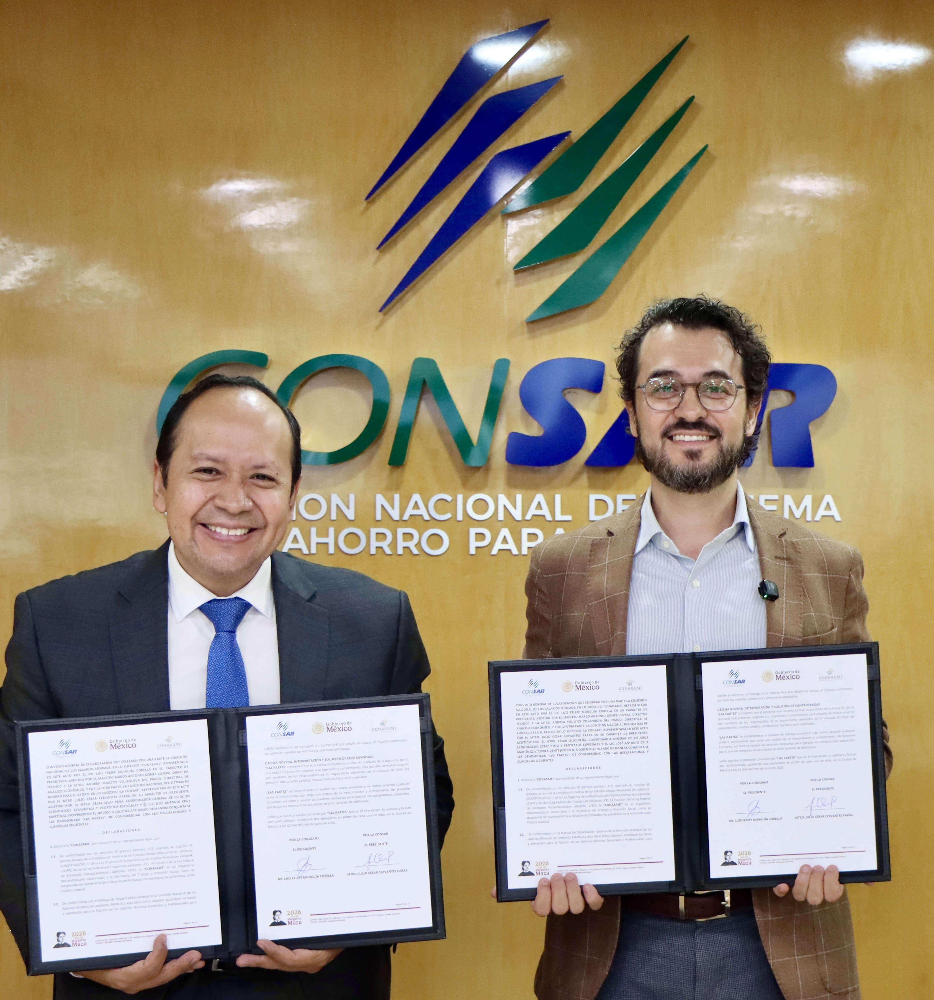

El salario de hoy y el retiro del mañana
CONSAR y CONASAMI firman convenio de colaboración
Durante el mes de junio, la Comisión Nacional del Sistema de Ahorro para el Retiro (CONSAR) y la
Comisión Nacional de los Salarios Mínimos (CONASAMI) llevaron a cabo la firma de un Convenio
General de Colaboración con el propósito de establecer mecanismos de coordinación para el
intercambio de información estadística, el desarrollo de estudios conjuntos y la generación de
evidencia que contribuya a una mejor comprensión de la relación entre la evolución salarial y el
Sistema de Ahorro para el Retiro.
El convenio fue suscrito por el Presidente de la CONSAR, Julio César Cervantes Parra, y el
Presidente de la CONASAMI, Luis Felipe Munguía Corella, quienes coincidieron en la importancia
de fortalecer la colaboración institucional para impulsar investigaciones y análisis orientados
al diseño de políticas públicas que favorezcan el bienestar de las personas trabajadoras
mexicanas.
Durante el acto protocolario, el Presidente de la CONSAR destacó que este convenio representa
una oportunidad para generar evidencia de alta calidad que fortalezca el diseño, la
implementación y la evaluación de políticas públicas. Por su parte, el Presidente de la CONASAMI
subrayó que la política de recuperación del salario mínimo ha contribuido a reducir la pobreza,
disminuir la desigualdad económica y promover la formalización laboral, por lo que este acuerdo
permitirá profundizar en el análisis de sus efectos sobre las aportaciones al sistema
pensionario y la sostenibilidad de las pensiones.
La firma del convenio se realizó en un contexto caracterizado por avances en materia laboral y
de seguridad social, en el que la recuperación salarial, la reducción de la informalidad y el
fortalecimiento del sistema pensionario han cobrado relevancia dentro de la agenda pública. Con
ello, la CONSAR y la CONASAMI refrendaron su compromiso de trabajar de manera coordinada para
generar conocimiento especializado en beneficio de las personas trabajadoras y pensionadas de
México.
